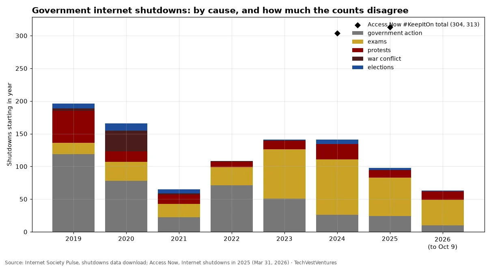

Q2. Shutdowns
Weekly Focus graphs, started Oct 25, 2026: new charts are added each week from primary or clearly named secondary data. Each caption names its sources and its caveats.

Internet Society Pulse logs 98 shutdowns in 2025 and 63 so far in 2026 (latest: a Delhi mobile-internet cut during protests on Oct 9-10, which Pulse lists as unconfirmed). Exams are a surprisingly large cause (Iraq and Syria cut the internet nationally for school tests). But Access Now's #KeepItOn coalition, using broader criteria, recorded a record 313 shutdowns in 52 countries in 2025, up from 304 in 2024, with Myanmar (95) the top offender and conflict the leading trigger (40%). The gap between the two counts is largely a matter of definitions and verification standards, so neither number alone is 'the' total.
Sources: Internet Society Pulse, shutdowns data download Access Now, Internet shutdowns in 2025 (Mar 31, 2026)